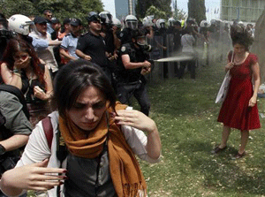

|
|
زن قرمزپوش، ترجیعبند زنان معترض استانبول
پنج شنبه16 خرداد 1392

شهرزادنیوز:تصویر این زن قرمزپوش که مکررا در رسانههای اجتماعی به اشتراک گذاشته شده و به شکل کاریکاتور روی پوسترها و برچسبها چاپ شده است، به ترجیعبند زنان معترض طی روزهای خشونتبار تظاهرات ضد دولتی در استانبول تبدیل شده است.
عذرا، دانشجوی ریاضی، در "بشیکتاش"، واقع در نزدیکی تنگه بسفر و یکی از مراکز تظاهرات هفته گذشته، میگوید: "جوهرهی اعتراضات در این عکس گنجیده شده است. خشونت پلیس علیه تظاهراتکنندگان مسالمتجو؛ مردم فقط سعی میکنند از خودشان و چیزهایی که برایشان ارزش دارد، حفاظت کنند."
در یکی از نسخههای گرافیکی چسبانده شده روی دیوارها، این زن بسیار بزرگتر از پلیس به تصویر کشیده شده است. زیرش نوشته شده است: "هر چه بیشتر شلیک کنید، ما بزرگتر میشویم."
ایالات متحده و اتحادیه اروپا و همچنین گروههای حقوق بشری نگرانی خود را از خشونت شدید پلیس ترکیه علیه تظاهراتکنندگان اعلام کردهاند.
رجب طیب اردوغان، نخستوزیر ترکیه، روز دوشنبه هفته گذشته تظاهراتکنندگان را تندروهایی خواند که "دست در دست تروریسم دارند"؛ توصیفی که در مقایسه با این زن قرمز پوش نامناسب به نظر میآید.
افرادی هم بودهاند که لباسهای رزمیتری به تن داشتند و با چهرهای پوشیده سنگ پرتاب میکردند، اما تعداد دختران بسیار جوانی که در بشیکتاش و میدان تقسیم، محل آغاز تظاهرات در عصر جمعه، شرکت داشتند، قابل توجه است.
مسلح به عینک شنا و ماسک علیه گاز اشکآور، و روسریای که شل دور گردنشان انداخته شده است، عذرا، حاسینه و سجیل عصر دوشنبه با نگرانی در منطقه بشیکتاش ایستاده بودند و با تاریک شدن هوا، تعداد هر چه بیشتری جوانان به آنان میپیوستند و جو گرفتهتر میشد.
آنها و شاید زن قرمزپوش، به قشری از زنان جوان تعلق دارند که معتقدند در ترکیه اردوغان چیزی را از دست دادهاند. آنها از ترویج حجاب اسلامی، سمبل دینداری زنانه، احساس خطر میکنند.
اشتغال برای زنان
اردوغان به زنان ترک نصیحت میکند که سه بچه بزایند، و بسیاری از زنان این امر - به همراه قانون جدید سقط جنین - را نشانه آن میدانند که او قصد دارد حقوق زنان را بازپس گیرد و آنها را به نقشهای سنتی مذهبی بازگرداند.
عذرا میگوید: "به زنانی که روسری سر میکنند، احترام میگذارم؛ این حقشان است، اما من هم میخواهم از حقوقام حمایت شود. من چپگرا یا ضدکاپیتالیست نیستم. میخواهم زنی شاغل باشم و در یک ترکیه آزاد زندگی کنم."
مصطفا کمال آتاتورک، بنیانگذار جمهوری سکولار در سال 1923 از میان ویرانههای امپراتوری عثمانی، زنان را تشویق میکرد به جای روسری، لباسهای غربی تن کنند و تصویر زنان شاغل را تبلیغ و ترویج میکرد. به نحوی طنزآمیز، اردوغان این روزها، خوب یا بد، مقتدرترین رهبر ترکیه از زمان آتاتورک تلقی میشود.
اردوغان، با حمایت نیرومند آناتولی محافظهکار، در سال 2002 به قدرت رسیده و از نظر محبوبیت رقیبی ندارد.
هرچند، تظاهرات آخر هفته در تعدادی از شهرها شاید نشانه تضعیف محبوبیت وی میباشد، حداقل در میان طبقه متوسط؛ طبقهای که در اولین سالهای رفرم سیاسی و اقتصادیاش که از قدرت ارتش کاست و برخی لایحههای حقوقی را ارائه کرد، از حامیاناش بودند.
حاسینه، دانشجوی شیمی، میگوید: "اردوغان میگوید 50 درصد مردم به او رأی داده اند. من اینجایم تا نشان دهم که من متعلق به 50 درصد دیگر هستم، به آن نیمه دیگری از جمعیت که او برایشان احترامی قائل نیست، نیمهای که میکوشد خردشان کند."
و میافزاید: "من میخواهم در ترکیه آینده داشته باشم، شغل داشته باشم، آزادی داشته باشم تا زندگی خودم را بکنم. اما همه اینها در خطرند. میخواهم اردوغان بفهمد."
اردوغان مردی متدین که انکار میکند آرزوهای اسلامی برای ترکیه دارد، حاضر نیست بپذیرد که میخواهد مردم را گول بزند و به رعایت قوانین مذهبی وادارد. او میگوید قوانین جدید مشروبات الکلی، که توسط زنان محکوم شده است، به خاطر حفظ سلامت مردم است نه به دلایل مذهبی.
اکنون تظاهراتکنندگان نسبت به آغاز تظاهرات آمادگی بیشتری دارند. برخی کلاههای محکم بر سر می گذارند، برخی سیاهپوشاند و اغلب کفشهای راحت به پا دارند. اما بسیاری هم هستند که مثل دختر قرمزپوش در میدان تقسیم، لباسهایی زنانه بر تن دارند.
بوسرا، دانشجوی 23 ساله رشته اقتصاد، میگوید: "مسلم است که نگرانم و میدانم این جا خطرناک است، اما برای من در مقایسه با خطر از دست دادن جمهوری ترکیه، آزادی و روحاش، اهمیتی ندارد." و میگوید والدیناش از او حمایت میکنند.
برگرفته از سایت رویترز